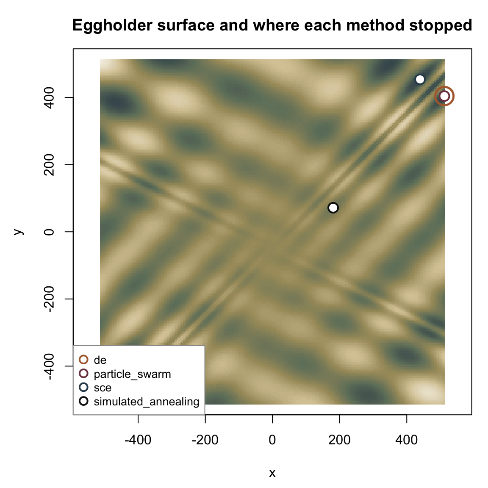
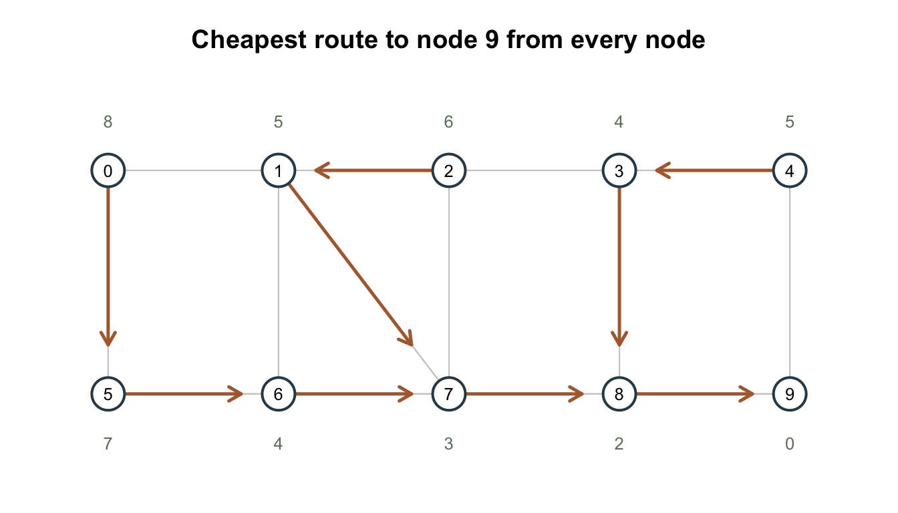

library(corehydror)19. Global, constrained, and network optimization
Example 13 pointed optim_minimize() at a custom likelihood with the six optimizers this package shipped at the time. That list is now fourteen, and it covers three kinds of problem the earlier six could not: a rough surface with many local minima, a problem with constraints on top of the objective, and a problem whose derivative you can write down. This page works through all three, then leaves the optimizers entirely for the shortest-path solver that shares their upstream namespace.
What you’ll learn
- Four seeded global optimizers on the same hard surface, and how differently they spend their function evaluations.
- Why two of them miss the answer at their default settings, and what to change.
- Constrained minimization with
optim_constraint()andmethod = "augmented_lagrange", and what the Lagrange multiplier it reports actually tells you. - That the choice of inner optimizer decides which local solution a constrained problem converges to.
- How supplying an analytic gradient to
"adam"cuts its objective calls by a factor of eight. shortest_path(), the Dijkstra routing table, over a ten-node network.- Which of these reproduce bit-for-bit across R, Python, and the original C# library, and which were measured not to.
Setup
Four global optimizers on one hard surface
The Eggholder function is the standard torture test for a global optimizer: a lattice of deep basins over \([-512, 512]^2\) with a global minimum of \(-959.6407\) in the corner at \((512, 404.2319)\), and dozens of local minima almost as deep. Its value at a point tells a local method nothing about where to go next.
eggholder <- function(p) {
x <- p[1]
y <- p[2]
-(y + 47) * sin(sqrt(abs(x / 2 + (y + 47)))) - x * sin(sqrt(abs(x - (y + 47))))
}All four stochastic global methods take the same arguments – bounds and a seed – so swapping one for another is a one-word change:
methods <- c("de", "particle_swarm", "sce", "simulated_annealing")
runs <- lapply(methods, function(m) {
optim_minimize(eggholder, lower = c(-512, -512), upper = c(512, 512), method = m, seed = 12345)
})
names(runs) <- methods
data.frame(
method = methods,
value = vapply(runs, `[[`, numeric(1), "value"),
x = vapply(runs, function(r) r$parameters[1], numeric(1)),
y = vapply(runs, function(r) r$parameters[2], numeric(1)),
evaluations = vapply(runs, `[[`, numeric(1), "function_evaluations"),
row.names = NULL
) method value x y evaluations
1 de -959.6407 512.0000 404.23175 1000
2 particle_swarm -959.6407 512.0000 404.23181 72420
3 sce -935.3380 439.4810 453.97744 4663
4 simulated_annealing -293.2958 180.8227 71.65686 800001Two of the four land on the global minimum and two do not. Differential evolution gets there in 1,000 objective calls; particle swarm agrees with it to ten significant digits but spends 72,420 calls doing so. Shuffled complex evolution stops in a neighbouring basin at \(-935.34\), and simulated annealing ends up at \(-293.30\), nowhere near.
grid <- seq(-512, 512, length.out = 220)
surface <- outer(grid, grid, function(x, y) {
-(y + 47) * sin(sqrt(abs(x / 2 + (y + 47)))) - x * sin(sqrt(abs(x - (y + 47))))
})
ramp <- colorRampPalette(c("#40525c", "#6f7f6a", "#a89a6b", "#d8c9a3", "#f4efe4"))
op <- par(mar = c(4.5, 4.5, 3, 1))
image(grid, grid, surface, col = ramp(60), xlab = "x", ylab = "y", asp = 1,
xlim = c(-545, 545), ylim = c(-545, 545),
main = "Eggholder surface and where each method stopped")
marks <- c(de = "#b06a3b", particle_swarm = "#7d3f4f", sce = "#2f4858",
simulated_annealing = "#111111")
# de and particle_swarm converge to the same corner, so de is drawn last as a wider open ring
# around the others rather than a filled disc that would hide them.
for (m in c("sce", "simulated_annealing", "particle_swarm")) {
points(runs[[m]]$parameters[1], runs[[m]]$parameters[2], pch = 21, cex = 1.6, lwd = 2,
col = marks[[m]], bg = "white")
}
points(runs$de$parameters[1], runs$de$parameters[2], pch = 21, cex = 3, lwd = 2.5,
col = marks[["de"]], bg = NA)
legend("bottomleft", methods, pch = 21, pt.cex = 1.3, pt.lwd = 2, col = marks, pt.bg = "white",
bg = "white", box.col = "grey60", cex = 0.85)
par(op)Differential evolution and particle swarm are the two nested circles in the top right corner. The other two stopped in basins that look, from inside them, exactly as good.
The defaults are settings, not verdicts
Neither failure above is a verdict on the method. Shuffled complex evolution runs five complexes by default; the upstream C# test for this exact function runs thirty, with ten evolution steps each, and that run finds the corner:
sce_tuned <- optim_minimize(eggholder, lower = c(-512, -512), upper = c(512, 512), method = "sce",
seed = 12345, control = list(complexes = 30, cce_iterations = 10))
c(default = runs$sce$value, tuned = sce_tuned$value, truth = -959.6407) default tuned truth
-935.3380 -959.6407 -959.6407 Thirty complexes cost 77,685 objective calls against the default’s 4,663, which is the trade: SCE searches by keeping several populations apart long enough to explore separately, and five of them are not enough separation for a surface this rough.
Simulated annealing is the more honest failure. Upstream’s own test on this function asserts nothing at all, under the comment that “simulated annealing fails to converge for this test function … this test is still included as an example”. The port reproduces that failure exactly, which is the point: a method with a fixed cooling schedule and 10,000 iterations of it will spend its whole budget without ever getting cold enough near the right basin.
sa <- runs$simulated_annealing
cat(sprintf("value %.4f after %d iterations and %d objective calls (%s)\n",
sa$value, sa$iterations, sa$function_evaluations, sa$status))value -293.2958 after 10000 iterations and 800001 objective calls (MaximumIterationsReached)Eight hundred thousand objective calls, and the search ends 666 units of objective short of where differential evolution finished in a thousand. Cost buys nothing if the schedule is wrong for the surface.
A constrained problem
Everything above minimizes over a box. method = "augmented_lagrange" is the one method that takes constraints on top of the box: it builds an augmented Lagrangian from the objective and the constraint violations, and hands that to an inner optimizer, tightening the penalty until the constraints hold.
Haimes problem 5.2 is the textbook case. Minimize
\[f(x, y) = (x - 2)^2 + (y - 4)^2 + 5\]
subject to \(g(x, y) = (x - 6)^2 + (y - 10)^2 + 6 \le 13.31\). The unconstrained minimum sits at \((2, 4)\), comfortably outside the feasible disk, so the constraint is binding and the answer must lie on its boundary:
primary <- function(p) (p[1] - 2)^2 + (p[2] - 4)^2 + 5
secondary <- function(p) (p[1] - 6)^2 + (p[2] - 10)^2 + 6
feasible <- optim_constraint(secondary, value = 13.31, type = "le")
feasible<corehydro_constraint> f(x) <= 13.31 (tolerance 1e-08)haimes <- optim_minimize(primary, initial = c(5, 5), lower = c(0, 0), upper = c(10, 10),
method = "augmented_lagrange", constraints = list(feasible))
c(x = haimes$parameters[1], y = haimes$parameters[2], value = haimes$value,
constraint = secondary(haimes$parameters)) x y value constraint
4.501394 7.749627 25.316672 13.310000 The solution sits on the constraint boundary, \(g = 13.31\) to eight digits, at the point the C# test asserts, \((4.5, 7.75)\) with an objective of \(25.31\). A constrained method that stopped anywhere inside the disk would be reporting a solution the constraint had not actually shaped.
The multiplier is what a penalty method gives you that a box does not:
haimes$multipliers$equality
numeric(0)
$less_than
[1] 1.666595
$greater_than
numeric(0)less_than holds one entry per "le" constraint, in the order they were passed. Its value, \(1.667\), is the shadow price of the constraint: to first order, relaxing the bound by one unit improves the objective by that much. Moving the bound from 13.31 to 14.31 puts the claim to the test:
relaxed <- optim_minimize(primary, initial = c(5, 5), lower = c(0, 0), upper = c(10, 10),
method = "augmented_lagrange",
constraints = list(optim_constraint(secondary, value = 14.31,
type = "le")))
c(tight = haimes$value, relaxed = relaxed$value, saving = haimes$value - relaxed$value,
multiplier = haimes$multipliers$less_than[1]) tight relaxed saving multiplier
25.316672 23.735008 1.581665 1.666595 The bound bought 1.58 against a predicted 1.67. The multiplier is a derivative and a whole unit is a long step on a curved boundary, so the two agreeing to 5% is the prediction working, not failing. Shrink the step and the gap shrinks with it.
The inner optimizer picks the solution
The augmented Lagrangian is only as good as the optimizer minimizing it. By default that is BFGS over the same bounds; inner swaps it for any other method, and on this problem the swap changes the answer:
powell_inner <- optim_minimize(primary, initial = c(5, 5), lower = c(0, 0), upper = c(10, 10),
method = "augmented_lagrange", constraints = list(feasible),
inner = list(method = "powell"))
data.frame(
inner = c("bfgs (default)", "powell"),
x = c(haimes$parameters[1], powell_inner$parameters[1]),
y = c(haimes$parameters[2], powell_inner$parameters[2]),
value = c(haimes$value, powell_inner$value),
multiplier = c(haimes$multipliers$less_than[1], powell_inner$multipliers$less_than[1])
) inner x y value multiplier
1 bfgs (default) 4.501394 7.749627 25.31667 1.666595
2 powell 5.479381 7.346897 28.30781 3.511786Both points are feasible and both are local solutions; Powell’s is worse by three units of objective. This is not a defect in either optimizer, and it is not a port artifact – the real C# library splits the same way on the same problem, which is why the fixture for the Powell run pins its own numbers rather than the C# test’s. It is the ordinary hazard of a non-convex constrained problem: the constraint boundary has more than one point where the objective’s gradient lines up with it, and which one you get is decided by the inner search, not by the constraint.
An analytic gradient
"adam" and "gradient_descent" are the two methods that follow a gradient. Given none, both compute one by finite differences: one extra objective call per parameter per step. Given an analytic gradient, they call it once per step instead.
The objective here is a separable quadratic with a known minimum at \((0.125, 0.2, 0.35)\) – three calibration parameters, each with its own target and its own sensitivity:
fxyz <- function(p) (4 * p[1] - 0.5)^2 + (3 * p[2] - 0.6)^2 + (2 * p[3] - 0.7)^2
fxyz_gradient <- function(p) {
c(8 * (4 * p[1] - 0.5), 6 * (3 * p[2] - 0.6), 4 * (2 * p[3] - 0.7))
}
numeric_run <- optim_minimize(fxyz, initial = c(0.2, 0.5, 0.5), lower = c(0, 0, 0),
upper = c(1, 1, 1), method = "adam")
analytic_run <- optim_minimize(fxyz, initial = c(0.2, 0.5, 0.5), lower = c(0, 0, 0),
upper = c(1, 1, 1), method = "adam", gradient = fxyz_gradient)
data.frame(
gradient = c("finite difference", "analytic"),
iterations = c(numeric_run$iterations, analytic_run$iterations),
objective_calls = c(numeric_run$function_evaluations, analytic_run$function_evaluations),
value = c(numeric_run$value, analytic_run$value)
) gradient iterations objective_calls value
1 finite difference 1516 12137 1.093709e-15
2 analytic 1516 1518 1.093709e-15Identical path, identical answer, 12,137 objective calls against 1,518. The two runs take the same 1,516 steps because ADAM’s own arithmetic is unchanged; what changes is that the finite-difference run pays eight calls a step to learn the gradient it was handed for free. On a three-parameter quadratic that is a curiosity. On a likelihood over a long record it is the difference between a fit that finishes and one you abandon.
The gradient is checked on the way in: return the wrong number of partials and the call fails rather than optimizing something else.
optim_minimize(fxyz, initial = c(0.2, 0.5, 0.5), lower = c(0, 0, 0), upper = c(1, 1, 1),
method = "adam", gradient = function(p) c(1, 2))Error:
! the gradient must return one value per parameter; got a value of length 2 for 3 parametersShortest paths through a network
shortest_path() is not an optimizer – its input is a graph, not a function – but it comes from the same upstream namespace and answers the same kind of question. Given a directed, weighted graph and one or more destinations, it runs Dijkstra’s algorithm backwards from the destinations and returns a routing table: for every node, which neighbour to step to, along which edge, and what the remaining trip costs.
The graph is upstream’s own routing test, two ranks of five nodes with a few rungs between them. Node indices are 0-based in both packages, matching the C# table they share:
edges <- data.frame(
from = c(0, 0, 1, 1, 1, 1, 2, 2, 2, 3, 3, 3, 4, 4, 5, 5, 6, 6, 6, 7, 7, 7, 7, 8, 8, 8, 9, 9),
to = c(5, 1, 0, 2, 6, 7, 1, 3, 7, 2, 8, 4, 3, 9, 0, 6, 5, 1, 7, 6, 1, 2, 8, 7, 3, 9, 8, 4),
cost = c(1, 30, 30, 1, 15, 2, 1, 5, 5, 5, 2, 1, 1, 30, 1, 3, 3, 15, 1, 1, 2, 5, 1, 1, 2, 2, 2, 30),
reach = c(0, 1, 1, 2, 3, 4, 2, 5, 6, 5, 7, 8, 8, 9, 0, 10, 10, 3, 11, 11, 4, 6, 12, 12, 7, 13, 13, 9)
)
routes <- shortest_path(edges$from, edges$to, edges$cost, destinations = 9,
edge_index = edges$reach)
routes next_node edge_index cost
1 5 0 8
2 7 4 5
3 1 2 6
4 8 7 4
5 3 8 5
6 6 10 7
7 7 11 4
8 8 12 3
9 9 13 2
10 9 -1 0Read the table one row at a time. From node 0 the cheapest way to node 9 costs 8 and starts by stepping to node 5 – even though node 0 has a direct edge to node 1, which is one step closer to the destination in hops. That edge costs 30 on its own, and the whole route through node 5 (0, 5, 6, 7, 8, 9) costs 8 in total. Hop count is not distance.
pos_x <- c(0:4, 0:4)
pos_y <- c(rep(1, 5), rep(0, 5))
op <- par(mar = c(1, 1, 3, 1))
plot(pos_x, pos_y, type = "n", axes = FALSE, xlab = "", ylab = "",
xlim = c(-0.3, 4.3), ylim = c(-0.35, 1.35),
main = "Cheapest route to node 9 from every node")
for (i in seq_len(nrow(edges))) {
segments(pos_x[edges$from[i] + 1], pos_y[edges$from[i] + 1],
pos_x[edges$to[i] + 1], pos_y[edges$to[i] + 1], col = "grey80")
}
for (n in 0:9) {
nxt <- routes$next_node[n + 1]
if (nxt != n) {
x0 <- pos_x[n + 1]; y0 <- pos_y[n + 1]
x1 <- pos_x[nxt + 1]; y1 <- pos_y[nxt + 1]
shrink <- 0.78 # stop short of the target circle so the arrowhead stays visible
arrows(x0, y0, x0 + shrink * (x1 - x0), y0 + shrink * (y1 - y0), length = 0.11,
lwd = 2.5, col = "#b06a3b")
}
}
points(pos_x, pos_y, pch = 21, cex = 3.4, bg = "white", col = "#2f4858", lwd = 2)
text(pos_x, pos_y, labels = 0:9, cex = 0.8)
text(pos_x, pos_y + ifelse(pos_y > 0.5, 0.22, -0.22), labels = sprintf("%g", routes$cost),
cex = 0.8, col = "#6f7f6a")
par(op)Every arrow is one row of the table, and following them from any node walks the cheapest route to node 9. The number beside each node is its cost to get there. Pass several destinations and each node keeps whichever one it reaches most cheaply, which is how you route a whole basin to the nearest of several outlets in one call.
What reproduces across languages, and what does not
Most of this site can promise that a seeded run gives bit-identical numbers in R and Python, because the work happens in the shared C++ core. The optimizer surface needs that promise stated more carefully, in three tiers, and every tier below was measured rather than assumed.
Deterministic, and bit-for-bit against C#. "adam" and "gradient_descent" have no random number generator at all, and reproduce the real C# library exactly – including the evaluation counts above, 12,137 and 1,518 – with or without fused-multiply-add contraction in the compiler. shortest_path() is the same: integer-and-single-precision arithmetic, reproducing C#’s routing table bit-for-bit including its single-precision partial sums. "augmented_lagrange" has no generator either, and reproduces C# to about \(2 \times 10^{-9}\) on the constructs above, becoming bit-identical when the core is compiled with -ffp-contract=off – the whole residual is contraction inside the inner BFGS.
Seeded, and completely reproducing. "simulated_annealing" and "multi_start" reproduce across all four of C++, R, Python, and C#: iteration count, evaluation count, converged value, and every parameter. fixtures/toolbox/toolbox_cross_language.json pins both at zero tolerance for exactly that reason.
Seeded, and reproducing across the two packages but not necessarily against C#. "particle_swarm" and "sce" branch on comparisons between accumulated sums, and clang and gcc contract a * b + c into a fused multiply-add by default where .NET never does. One contracted expression can flip an accept-or-reject and every draw after it is spent differently. Measured: particle swarm on the Booth function takes 3,073 iterations and 92,220 evaluations both in the real C# library and in an uncontracted C++ build, against 3,855 and 115,680 in a contracted one. So the same fixture pins, for particle swarm on Eggholder, only what survives both paths – the iteration count, the evaluation count, the converged value, and the parameter that lands exactly on the bound – and for SCE only the counts and the status. Nothing was skipped and no tolerance was loosened to get there; the unreproducible quantities are simply not asserted, and each run’s accuracy is pinned separately against the upstream test’s own literals.
Underneath all three tiers sits the limit example 13 established, which has not changed: a seeded run’s parameters come from the shared C++ generator and reproduce, while the reported objective value comes from re-evaluating your own R or Python code, and the two languages do not guarantee identical rounding for the same formula. On this page they happen to agree to the last bit on every construct, which is common and is not a guarantee.
Key takeaways
- The four seeded global methods differ by more than an order of magnitude in what they spend and by hundreds of units of objective in what they find. Try more than one before believing any of them.
controlis where a global method’s search strategy lives. Shuffled complex evolution finds the Eggholder minimum at thirty complexes and misses it at five; the code is identical.optim_constraint()plusmethod = "augmented_lagrange"puts constraints on top of the box, and reports the multiplier that prices each one.innerdecides which local solution a constrained non-convex problem converges to. Change it and check whether the answer moved.- An analytic gradient turns a per-parameter finite-difference bill into one call a step – an eightfold cut on three parameters, more on more.
shortest_path()answers routing questions for a whole network at once, and the cheapest route is rarely the one with the fewest hops.
Reproduction check
Four groups, kept separate. Values pinned against the upstream C# MSTest literals carry that test’s own tolerance. Values read off the real C# library by the dotnet oracle gate carry the tolerance the matching fixture uses. This page’s own deterministic numbers are checked at 1e-15 relative tolerance, since R’s decimal parser can land one ulp off a written literal. The particle swarm and simulated annealing runs are pinned exactly, but only on the quantities fixtures/toolbox/toolbox_cross_language.json itself pins – particle swarm’s second parameter is deliberately absent here for the reason given above.
near <- \(x, literal, tol = 1e-15) abs(x / literal - 1) < tol
stopifnot(
# Upstream MSTest literals, at the C# test's own tolerance.
abs(sce_tuned$value - -959.6407) < 1e-4, # SCE Test_Eggholder
abs(sce_tuned$parameters[1] - 512) < 1e-3,
abs(sce_tuned$parameters[2] - 404.2319) < 1e-3,
abs(runs$de$value - -959.6407) < 1e-4, # the textbook optimum
abs(haimes$parameters[1] - 4.5) < 1e-2, # AL Test_Haimes_5_2
abs(haimes$parameters[2] - 7.75) < 1e-2,
abs(haimes$value - 25.31) < 1e-2,
abs(haimes$multipliers$less_than[1] - 1.67) < 1e-2,
abs(numeric_run$value - 0) < 1e-4, # ADAM Test_FXYZ
abs(analytic_run$parameters[1] - 0.125) < 1e-4,
abs(analytic_run$parameters[3] - 0.35) < 1e-4,
# Read off the REAL C# library by the dotnet oracle gate.
abs(powell_inner$parameters[1] - 5.4793811558833845) < 1e-6,
abs(powell_inner$value - 28.30781213770569) < 1e-6,
abs(powell_inner$multipliers$less_than[1] - 3.511785881316314) < 1e-6,
numeric_run$function_evaluations == 12137L,
analytic_run$function_evaluations == 1518L,
analytic_run$iterations == 1516L,
# Seeded, and measured to reproduce exactly in C++, R, Python and C#.
runs$particle_swarm$iterations == 2413L,
runs$particle_swarm$function_evaluations == 72420L,
identical(runs$particle_swarm$value, -959.640662720851),
identical(runs$particle_swarm$parameters[1], 512),
identical(runs$simulated_annealing$value, -293.29583227407102),
runs$simulated_annealing$iterations == 10000L,
# The Dijkstra routing table, asserted by exact equality as the C# test asserts it.
identical(routes$cost, c(8, 5, 6, 4, 5, 7, 4, 3, 2, 0)),
identical(routes$next_node, c(5L, 7L, 1L, 8L, 3L, 6L, 7L, 8L, 9L, 9L)),
# This page's own deterministic numbers.
near(haimes$value, 25.316672218251753),
near(secondary(haimes$parameters), 13.31, tol = 1e-9),
near(numeric_run$value, 1.0937092922988765e-15)
)
cat("All reproduction checks passed.\n")All reproduction checks passed.